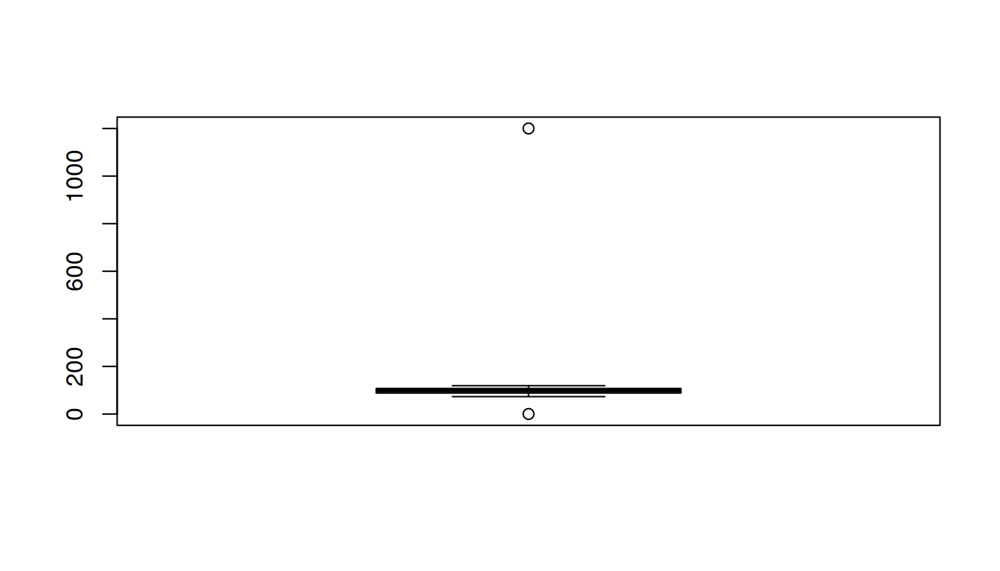
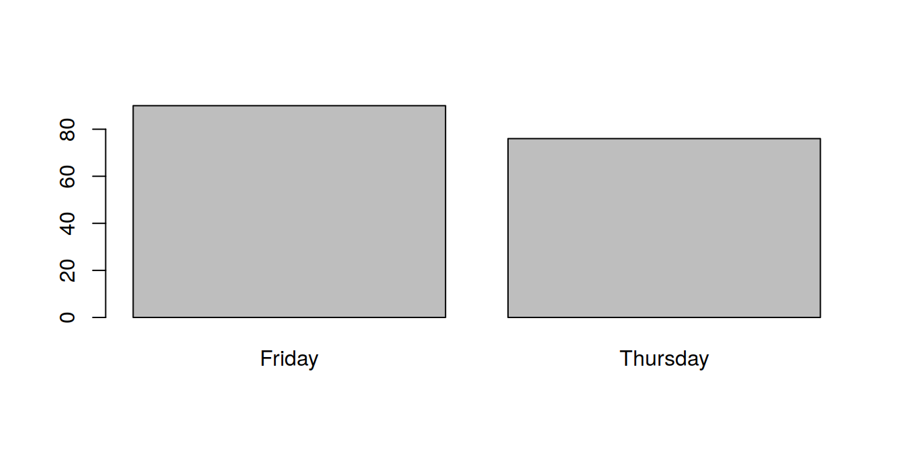
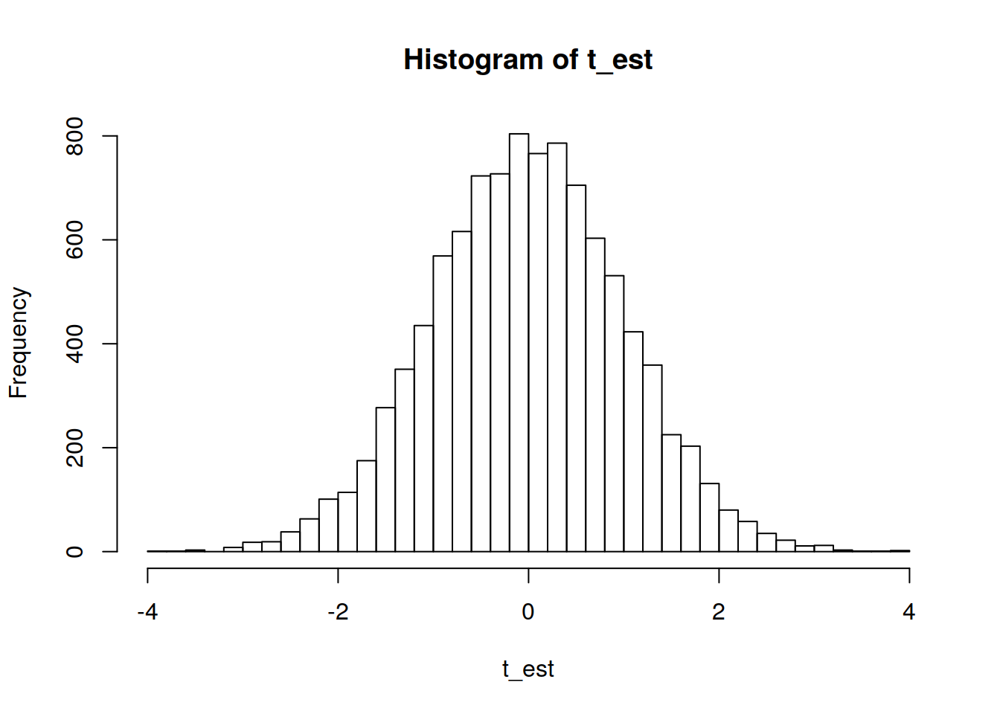

Chapter 5 Lab 5
5.1 Finally stats
Welcome to lab 5! Today, we will dip our toes in the wonderful world of statistical analysis. We’ll use R to gain some experience analysing data.

Task: You know what’s coming, don’t you? That’s right, create a new R project.
TIP: You really want to work from both the script and the console here. Any commands that modify the data or create plots and output analysis that you want to have access to belong in the script. Any other commands (one-off stuff) should be left for the console.
5.1.1 Data set
Big brother has been collecting some data on you. Go on LEARN, fetch the ‘Lab5_data.csv’ file in the Week 5 folder and save it into your project directory.
Here is the code book for the data set
id: categorical; student ID numberlab: categorical with 2 levels ("Thursday","Friday"); student’s lab groupprogramme: categorical with 3 levels (1="Psychology",2="Linguistics",3="CogScience"); programme of studylab_time: numeric, integer; average time in minutes spent on the lab sheets across last 4 labstasks3: numeric, integer; number of tasks completed in lab 3, maximum 18tasks4: numeric, integer; number of tasks completed in lab 4, maximum 18
5.1.2 Read in and clean data
Task: Read the data into R. Use the read.csv() function to save the data set into an object called data. Hint. If you save the file somewhere else than your project directory, you will have to specify the path to it so that R knows where to find it.
data <- read.csv("data/Lab5_data.csv")
As a first step in analysis, you need to familiarise yourself with the data. looking at the first few rows is a good way of doing this.
Task: Use the head() function to see the first few rows of data.
head(data)## V_1 V_2 V_3 V_4 V_5 V_6
## 1 1 Thursday 1 100 10 12
## 2 2 Friday 3 NA NA NA
## 3 3 Thursday 1 NA NA 4
## 4 4 Friday 2 115 11 13
## 5 5 Friday 2 104 6 12
## 6 6 Friday 3 75 5 2
OK, you can probably see that the data set isn’t quite ready for analysis. This is often the case with real data. You might get your hands on all sorts of data sets collected by people with varying degrees of methodological prowess. Getting data into shape for analysis can be a time-consuming and frustrating process and the ability to do it is a crucial skill.
Task: Look, the data set doesn’t have proper variable names, just some V labels. Let’s remedy this. Name the columns according to the code book. Hint. The names() function will be handy here
names(data) <- c("id", "lab", "programme", "lab_time", "task3", "task4")
Now that our variables have informative names, let’s look at some descriptive statistics. This is a quick way of spotting obvious errors in the data set.
Task: Use the describe() function from package psych to cast a first glance on your data. Hint. Don’t forget that to use functions from packages that are not pre-loaded at the start of the R session, you have to load them using library().
library(psych)
describe(data)## vars n mean sd median trimmed mad min max range skew
## id 1 167 84.00 48.35 84 84.00 62.27 1 167 166 0.00
## lab* 2 167 2.39 1.50 1 2.36 0.00 1 5 4 0.16
## programme 3 167 1.96 0.82 2 1.95 1.48 1 3 2 0.08
## lab_time 4 155 103.79 90.92 100 98.71 14.83 -78 1200 1278 11.24
## task3 5 157 6.32 3.89 6 6.00 4.45 1 21 20 0.84
## task4 6 166 7.83 3.59 8 7.93 3.71 -2 16 18 -0.21
## kurtosis se
## id -1.22 3.74
## lab* -1.96 0.12
## programme -1.53 0.06
## lab_time 133.42 7.30
## task3 0.67 0.31
## task4 -0.30 0.28
This should be raising some red flags! Check out the minima and maxima of the variables. Is this what you’d expect based on what the code book says? No, I didn’t think so… :)
Task: What class is id? It’s a categorical variable so let’s tell R to treat is as such. Hint. You want to turn it into a factor.
data$id <- factor(data$id)Task: Can you spot what’s wrong with the lab variable? How many levels does it have? How many is it supposed to have? Can you fix it? Read on for a more step-by-step guide if you’re feeling a bit lost.
table(data$lab) # we have some typos!##
## Friday Fryday Thrusday Thursday Tuesday
## 89 1 1 75 1Hint. table() is a useful function for categorical variables/factors. It let’s you know what different values there are in the data and what their frequencies are.
You might have noticed that lab is already a factor. That is because the read.csv() function turns variables with character strings. You can easily change factors into character vectors using as.character() but, as a general rule, it might be worth reading data in the rawest possible format.
Task: Can you figure out how to tell read.csv() not to turn strings into factors? Hint. Look up the help file for the function and read through the list of arguments it takes.
read.csv(..., stringsAsFactors = F)
The nice thing about the script (you have been using the script, haven’t you?) is that if you realise you should have done something slightly different earlier in the process of cleaning and analysing your data, you can just edit and re-run the code.
Task: Edit the script code to read in the data without turning strings into factors and re-run the remainder of the code you’ve written thus far.
# only these 3 lines are required
data <- read.csv("data/Lab5_data.csv", stringsAsFactors = F)
names(data) <- c("id", "lab", "programme", "lab_time", "task3", "task4")
data$id <- factor(data$id)
Now that’s done, you can do something about the lab variable.
Task: Change the inappropriate values of lab. Hint. This is where logical subsetting comes in handy so good thing you spilled so much sweat over it!
# only these 3 lines are required
data$lab[data$lab == "Thrusday"] <- "Thursday"
data$lab[data$lab == "Fryday"] <- "Friday"
data$lab[data$lab == "Tuesday"] <- NA # I think it's best to get rid of this oneWant more hints? To refresh your memory, something like data$variable[data$variable == "value"] <- "different value" does the trick.
You will have noticed that one of the weird values in data$lab is not really a typo. What to do about it is sort of your call. You might argue that it is a typo and change it to the value it resembles. However, it is possible that the data is self-reported, in which case you might legitimately ask if including data from some space cadet who doesn’t know what day it is is useful. I would probably exclude this person’s entry for the lab variable (by replacing it with NA). I would not recommend ever deleting entire rows from your data frames.
Task: Good, now you can change the variable into a factor.
data$lab <- factor(data$lab)
So that’s lab sorted. Let’s move on to programme. As you can see, it only has numeric values. It is also not a factor. It would be good to do something about this, don’t you think?
Task: First things first though! Have a closer look at the variable. Does it look fine?
Task: If you’re happy with it, tell R it’s a factor with labels as per the code book. Hint. There are several ways to do this. For instance, you can use the factor(..., labels = ...) approach, or opt for the recode() function from package car.
data$programme <- factor(data$programme, labels = c("Psychology", "Linguistics", "CogScience"))
Grand! Moving on to lab_time. Definitely something fishy going on here. Can you spot what it is?
Task: Fix the lab_time so that it conforms to the criteria in the code book. Hint. There are 3 problems with the values: there are impossible ones, improbable ones, and the format of the numbers suggests that there are also non-integer ones. Dealing with the third issue is going to be a bit of a puzzle.
5.1.3 Impossible values
It stands to reason that average time spent on the lab sheets should not be negative.
Task: Get rid of the negative values by replacing them with NAs. Hint. again, logical subsetting is the way to go!
data$lab_time[data$lab_time < 0] <- NA
5.1.4 Improbable values
Task: Have a look at the distribution of lab_time. Use a histogram or a box plot to visualise it.
boxplot(data$lab_time)
You should hopefully see that there’s an improbably large value in the variable.
Task: Choose a safe cut-off point and use it to remove the offending data point.
data$lab_time[data$lab_time > 200] <- NA # only one point larger than 200
Should we have really removed the poor person who spends on average 20 hours on a lab sheet? Is it a typo? Probably… But what if not? Well, if not then, first of all, I sincerely apologise to this, brave, tenacious hero! That said, they are probably quite an extreme outlier. I think it’s safe to remove this value, what do you think?
5.1.5 Non-integer values
Have a look at this:
class(data$lab_time)## [1] "numeric"class(data$task3)## [1] "integer"You see that task3 is a vector of integers, just like we’d expect it to be. lab_time, however, is not. The only reason for that is that at least one of the values of lab_time is a decimal number and so the entire vector must be decimal. Since the code book above tells us that lab_time is supposed to be an integer, any decimal values must be typos. To get rid of them, we first need to identify them
Task: How can we programmatically spot non-integers?
Well, non-integers will – by definition – not be divisible by 1 without a remainder. That means that if we can somehow ask R to give us the remainder of division by 1, any numbers that are not zero will identify non-integers.
As luck would have it, the mathematical operation we are looking for is called modulo and is implemented in R as the %% operator:
32.452 %% 1## [1] 0.452Putting it all together, lab_time modulo 1 should be 0. If it’s not, we should get rid of the value.
Task: Use %% 1 and logical subsetting to get rid of non-integer values.
data$lab_time[data$lab_time %% 1 != 0] <- NA
Task: If we want, we can now safely turn lab_time into integer. Hint. as.integer().
data$lab_time <- as.integer(data$lab_time)
Two more variables to go. These are fairly straight-forward so I’ll let you deal with them unaided. Just apply the same reasoning and principles as we did above.
Task: Clean the tasks3 and tasks4 variables so that they conform to the code book rules.
data$task3[data$task3 < 0 | data$task3 > 18] <- NA
data$task4[data$task4 < 0 | data$task4 > 18] <- NA
I think this is us, we have ourselves some nice and clean data. If you’ve done everything with me, you should see this output if you ask for describe(data) again:
describe(data)## vars n mean sd median trimmed mad min max range skew
## id* 1 167 84.00 48.35 84 84.00 62.27 1 167 166 0.00
## lab* 2 166 1.46 0.50 1 1.45 0.00 1 2 1 0.17
## programme* 3 167 1.96 0.82 2 1.95 1.48 1 3 2 0.08
## lab_time 4 152 98.45 12.44 100 98.91 14.83 73 119 46 -0.27
## task3 5 155 6.15 3.59 6 5.91 4.45 1 15 14 0.50
## task4 6 163 7.99 3.40 8 8.04 2.97 1 16 15 -0.04
## kurtosis se
## id* -1.22 3.74
## lab* -1.98 0.04
## programme* -1.53 0.06
## lab_time -0.98 1.01
## task3 -0.58 0.29
## task4 -0.56 0.27The take-home message is that, in order to produce sensible analyses, you must make sure you work with sensible data. Cleaning data requires a great deal of attention to detail, thinking, and, well, coding. Having done that, we can move on to finding out about the world…
5.2 Let’s stats!
In this section, we will ask and answer questions about our variables and relationships between them. What I’d like you to do is to run at least one test “by hand”, i.e., without using a built-in R function. Doing this will help you understand the basic principle common to all statistical tests we will cover on this course.
5.2.1 Categorical variables
Let’s have a look at lab again. This time, we want to know if the number of students attending the Thursday lab is the same as the number attending the Friday lab. In other words,
\[H_0: P(Thursday) = P(Friday)\]
To test this null hypothesis, let’s first simply look at the frequency table.
Task: Ask R to dive you a table of the lab variable. Save this table into an object called lab_table since it will come in handy later. Once that’s done, look at it in the console.
lab_table <- table(data$lab)
lab_table##
## Friday Thursday
## 90 76
If you want, you can visualise this distribution in a plot, such as this one:
barplot(lab_table)
We can test our hypothesis using a Chi-square test (specifically a goodness-of-fit test). In other words, we want to see if the distribution of lab is significantly different from uniform. To do that, we first need to know what frequencies we expect under a uniform distribution.
Task: Create an object exp with the expected frequencies. Try doing this programmatically rather than manually typing in the numbers. Hint. The expected frequency of each category is half of all the observations.
exp <- rep(sum(lab_table)/2, 2)
exp## [1] 83 83
Now we want a measure of just how much our observed distribution deviates from the expected one. Squares of differences are a good measure (if we just took differences they would cancel each other out), however, a difference of 1 if the expected value is 100 isn’t the same as a difference of 1 if the expected value is 10. So to get a more proportional measure, let’s scale the squared differences between the observed and expected counts by the expected counts (\((obs - exp)^2/exp\))
Task: Do this in R! Create an object sq_scaled that includes these scaled squared differences
sq_scaled <- (lab_table - exp)^2/exp
sq_scaled##
## Friday Thursday
## 0.5903614 0.5903614We still have as many numbers as we have categories. To get a single measure of the departure from expectation, let’s just add the numbers up. Since this is our test statistic, let’s call it chi_sq.
Task: Calculate the chi_sq statistic.
chi_sq <- sum(sq_scaled)
chi_sq## [1] 1.180723
We know that this test statistic follows the \(\chi^2\)-distribution. We also know that this distribution changes shape depending on the number of degrees of freedom. So our test statistic will have a different associated p-value under each of these distributions:
pchisq(chi_sq, 3, lower.tail = F)## [1] 0.7576314pchisq(chi_sq, 8, lower.tail = F)## [1] 0.9968287pchisq(chi_sq, 147, lower.tail = F)## [1] 1Let’s calculate the degrees of freedom. If you know what the marginal value is, i.e., how many people are there altogether, how many entries in lab_table are free to vary?
Task: OK, now that we have the number of dfs figured out, let’s get the p-value associated with our observed chi_sq!
p <- pchisq(chi_sq, 1, lower.tail = F)
p## [1] 0.2772089
As a sanity check, we can run the test using R’s chisq.test() function. If you pull up its documentation, you’ll see that for a Chi-square test such as this one, it requires a table as the only argument.
Task: Run the test using the R function.
chisq.test(lab_table)##
## Chi-squared test for given probabilities
##
## data: lab_table
## X-squared = 1.1807, df = 1, p-value = 0.2772
Hopefully, you will have got the same results from the by-hand calculation.
A Chi-square test showed that the distribution of lab group attendance did not significantly depart from uniform, \(\chi^2(1) = 1.18,\ p=.277\).
Task: Perform a Chi-square test on the distribution of programme separately for the Thursday and Friday labs. The null hypothesis assumes that both are uniform. Write up the results.
chisq.test(table(data$programme[data$lab == "Thursday"]))##
## Chi-squared test for given probabilities
##
## data: table(data$programme[data$lab == "Thursday"])
## X-squared = 9.0263, df = 2, p-value = 0.01096chisq.test(table(data$programme[data$lab == "Friday"]))##
## Chi-squared test for given probabilities
##
## data: table(data$programme[data$lab == "Friday"])
## X-squared = 2.8667, df = 2, p-value = 0.2385A Chi-square test showed that the distribution of lab group attendance was significantly different from uniform in the Thursday group (\(\chi^2(2) = 9.03,\ p=.011\)) but not the Friday group (\(\chi^2(2) = 2.87,\ p=.239\)).
This is the kind of multiple testing that inflates Type I error, so don’t do it in practice! :)
Instead, let’s see if there is a relationship between the day on which the lab takes place and who attends it.
Task: First, create a contingency table cont, cross-tabulating lab and programme. You can do this in several ways but two of the more convenient ones are using table() or xtabs(). The latter produces a table that looks like this:
cont <- xtabs(~ lab + programme, data)
cont## programme
## lab Psychology Linguistics CogScience
## Friday 23 31 36
## Thursday 37 23 16
Above, we used a Chi-square goodness-of-fit test to see how well a uniform distribution fit our data. We can also use a Chi-square test to compare two (or more) observed distributions in a Chi-square test of independance.
To perform a Chi-square test, we need the observed counts, the expected counts and the degrees of freedom. We just got the first one in our contingency table. The latter two can be derived using observed and marginal counts. Marginal counts are called marginal because they are the row and column sums of the contingency table and are, thus, in its margins.
Task: Add margins to cont. There is a function that does that. Hint. If you don’t know its name, maybe try asking the internet how to add margins to a table in R.
addmargins(cont)## programme
## lab Psychology Linguistics CogScience Sum
## Friday 23 31 36 90
## Thursday 37 23 16 76
## Sum 60 54 52 166
If you want, you can calculate the expected counts by hand. However, what I’d like you to do is figure out how many degrees of freedom there are in this table. If the marginal counts are fixed, how many independent values do you need to know before you know what the others are?
Start by fixing the number of the cell [1, 1] to some number. Does that tell you anything about some other values in other cells, given that the marginal counts are fixed? Fix another one, say [1, 2], what about now? Carry on in the same vein until you can solve the table. In a way, it’s a bit like sudoku. In fact, a sudoku with only one solution is basically a table with 0 degrees of freedom!
Task: How many dfs do we have?
# you can solve the table once you know 2 values:## programme
## lab Psychology Linguistics CogScience Sum
## Friday 23 31 90
## Thursday 76
## Sum 60 54 52 166Great! Now, you should understand why the formula for df for Chi-square tests is what it is (\((r-1)(c-1)\) where r is the number of rows and c is the number of columns).
Let’s run the test itself! There are, yet again, several ways of telling the chisq.test() function that you want to perform the test of independence. You can give it a contingency table (without marginal counts!) or two variables. Consult the function documentations (?chisq.test) for examples and details.
Task: Run the Chi-square test of independence to see if the day of the lab is related to the distribution of programme. Write up the results.
chisq.test(data$lab, data$programme)##
## Pearson's Chi-squared test
##
## data: data$lab and data$programme
## X-squared = 11.042, df = 2, p-value = 0.004002# equivalent ways
# chisq.test(table(data$lab, data$programme))
# chisq.test(xtabs(~ lab + programme, data))According to a Chi-square test of independence, there was a relationship between the day of the lab and the distribution of attending students with respect to study programme, \(\chi^2(2) = 11.04,\ p=.004\).
Have a think: Was the test we used appropriate for the kind of data we had? In other words, were the assumptions of the test met?
Yes, the variables are both categorical, with expected cell counts of \(> 5\), and the observations are random and independent.
5.2.2 Analysing continuous data
5.2.2.1 Known \(\sigma\)
Let’s look at the average time spent on a lab sheet. What if I told you, that – as far as undergraduate psychology students are concerned – the mean time spent on these kinds of labs sheets is 103.7 minutes with the population std. deviation \(\sigma = 14.6\)? Could you use this knowledge to test whether USMR students are a random sample from the psych undergrad population or not?
Task: Try testing the null hypothesis using a 2-tailed z-test. Do it “by hand” (there’s no built-in R function for the z-test anyway). Remember, all you’re doing is calculating the z-statistic and getting the p-value of this or more extreme statistic under the standard normal distribution.
Hint: The formula for the z-test is \(z = \frac{\bar{x} - \mu}{SE}\), with \(SE = \frac{\sigma}{\sqrt{n}}\). The function you need to get the p-value is pnorm(). Think about which tail of the normal distribution you’re interested in and how to get the 2-tailed p-value.
5.2.2.1 Warning
Watch out for missing values!
These are the results you should have got:
mu <- 103.7
sigma <- 14.6
n <- length(na.omit(data$lab_time))
z <- (mean(data$lab_time, na.rm = T) - mu) /
sqrt(sigma^2/n)
p <- round(pnorm(abs(z), lower.tail = F) * 2, 7)
z <- round(z, 3)
paste("z =", z)## [1] "z = -4.43"paste("p =", p)## [1] "p = 9.4e-06"Task: Write up the results of the z-test.
The mean time spent on lab sheets in the sample of USMR students was significantly less than in the population of Psychology undergraduates, \(z=-4.43,\ p<10^{-5}\).
5.2.2.2 Unknown \(\sigma\)
As you know, the z-test required the population variance to be known and so I told you what it is so that you could run the test. Let’s try a more realistic scenario, where we don’t know \(\sigma^2\). Let’s keep the hull hypothesis the same tough, \(H_0: \mu = 103.7\).
Task: Run the one-sample t-test on the same variable and write up the results. Take note of the similarities and differences between the results of the z- and the t-test. Hint. By default, the test assumes that \(\mu = 0\). The documentation to the t.test() function will help you find out how to change this value.
t.test(data$lab_time, mu = mu)##
## One Sample t-test
##
## data: data$lab_time
## t = -5.2003, df = 151, p-value = 6.375e-07
## alternative hypothesis: true mean is not equal to 103.7
## 95 percent confidence interval:
## 96.46076 100.44713
## sample estimates:
## mean of x
## 98.45395A one-sample t-test revealed a significant difference in time spent on lab sheets between USMR students (Mean = 98.45, 95% CI [96.46, 100.45]) and the population of Psychology undergraduates, \(t(151)=-5.2,\ p<10^{-6}\).
The result of the t-test should be very close to that of the z-test. However, the smaller the sample size, the larger the effect of random statistical fluctuations.
Task: Re-run the t-test on a random sample of 20 elements of lab_time to see that sometimes size really does matter!
t.test(data$lab_time[sample(n, 20)], mu = mu)##
## One Sample t-test
##
## data: data$lab_time[sample(n, 20)]
## t = -0.64608, df = 16, p-value = 0.5274
## alternative hypothesis: true mean is not equal to 103.7
## 95 percent confidence interval:
## 95.66647 107.98059
## sample estimates:
## mean of x
## 101.8235
5.2.3 More analysis!
Thinking about it, it doesn’t seem to me like we’ve explored lab_time enough yet. Let’s see what else hides within! To encourage some healthy rivalry (for when has that gone wrong?!), let’s compare the Thursday and the Friday folks to see who’s fastest with the lab sheets.
We can assume, that people attend either one or the other group.
Task: Write down the null hypothesis. Hint. We are looking at differences in means of average time spent on lab sheets in the two groups.
\(H_0: \mu_{Thursday} = \mu_{Frisday}\)
Task: OK, let’s test the null with a Welch’s t-test. That’s the one R does by default when you ask it to perform a t-test on independent data. Write up the results. Hint. The function documentation should help you find out how to specify the test formula. If it doesn’t, ask the Internet.
t.test(lab_time ~ lab, data)##
## Welch Two Sample t-test
##
## data: lab_time by lab
## t = -4.5055, df = 143.12, p-value = 1.365e-05
## alternative hypothesis: true difference in means is not equal to 0
## 95 percent confidence interval:
## -12.249376 -4.778753
## sample estimates:
## mean in group Friday mean in group Thursday
## 94.43038 102.94444A Welch’s t-test showed that the time spent on lab sheets in the Thursday group was significantly longer than that in the Friday group, Mean diff = \(-8.51\), 95% CI [\(-12.25,\ -4.78\)], \(t(143.12)=-4.51,\ p<10^{-4}\).
Great! Finally, let’s see if there’s been a change in the number of tasks students are able to complete in the labs between week 3 and 4.
Task: What is the null hypothesis and which test is appropriate to test it?
\(H_0: \mu_{wk3} = \mu_{wk4}\)
The paired sample t-test is the one to pick as the observations are paired (and therefore not independent) – one observation per week from each student.
Task: Run the test and write up the results.
t.test(data$task3, data$task4, paired = T)##
## Paired t-test
##
## data: data$task3 and data$task4
## t = -7.5341, df = 152, p-value = 4.097e-12
## alternative hypothesis: true difference in means is not equal to 0
## 95 percent confidence interval:
## -2.582219 -1.509284
## sample estimates:
## mean of the differences
## -2.045752“The students spent on average less time on the lab sheet in week 4 compared to week 3, Mean diff = \(-2.05\), 95% CI [\(-2.58,\ -1.51\)], \(t(152)=-7.53,\ p<10^{-11}\).
You can now do statistical analysis of several types of data. Very well done indeed!
5.2.4 Extra: Get loopy
It’s important to understand where p-values come from. Simulating the sampling distribution of the test statistic is the best way of getting your head around the concept. So let’s do that!
Given what the sampling distribution is, simulating it involves taking many samples from the population. Every time you encounter a repetitive task you should start thinking about how to delegate as much of the legwork as possible to the computer.
This is where loops come in very handy. They are used to repeat a block of code an arbitrary number of times. There are other ways of implementing this in R, you could try using the replicate() function instead.
Let’s look at the anatomy of a loop in R:
for (i in n) {
# code
}The for () {} bit is just syntax and its sole function is to tell R that this is a loop. The bit in () defines the iterator variable i and the vector n over which the loop iterates. So for (i in 1:10) will be a loop that runs through 10 times. First, it will assign i the value of 1 and run the rest of the code. Then, it will assign it the next value in the n vector, e.g., 2 and run the code again. It will repeat until it runs out of elements of n.
To demonstrate:
for (i in 1:5) {
print(i)
}## [1] 1
## [1] 2
## [1] 3
## [1] 4
## [1] 5As you can see, the loop printed the value of i for each of the 5 iterations.
The code in the body of the loop {} can do whatever you want. you can use the current value of i to create, modify, or subset data structures, to do calculations with it, or simply not use it at all. The world’s your oyster!
Finally, loops can be nested, if needed:
for (i in n) {
for (j in m) {
# code
}
}This will run all the iterations of the inner loop for each iteration of the outer one.
Task: Have a go at writing a loop that will print data[1, 1], then data[2, 2], then data[3, 3], etc., for as many times as there are columns of data. Hint. ncol() is a good function to use to specify the vector over which to loop. The output should look like this:
for (i in 1:ncol(data)) {
print(data[i, i])
}## [1] 1
## 167 Levels: 1 2 3 4 5 6 7 8 9 10 11 12 13 14 15 16 17 18 19 20 21 22 ... 167
## [1] Friday
## Levels: Friday Thursday
## [1] Psychology
## Levels: Psychology Linguistics CogScience
## [1] 115
## [1] 6
## [1] 2Now, often you will want to save the output of each iteration of the loop. There are again many ways to do this but a straight-forward one is to first create an empty object and then start combining it with the output of the loop:
out <- c() # empty vector
for (i in 1:10) {
# append the result of some operation to to the vector
out <- c(out, data$lab_time[i * 10])
}
out## [1] NA 93 114 102 107 81 94 88 NA 87Task: Combine the two tasks above and create a vector out that includes data[1, 1], data[2, 2], data[3, 3], etc.
out <- c()
for (i in 1:ncol(data)) {
out <- c(out, data[i, i])
}
out## [1] 1 1 1 115 6 2Now that you have an inkling about how to use loops, let’s see if we can make use of them to simulate our sampling distribution
Task: First, let’s create an empty vector that will store each estimate of out t-statistic. Call it t_est, why not!
t_est <- c()Task: Next, let’s write the core structure of a loop. Say we want the loop to run 104 times. Don’t worry about the code inside {} just yet.
for (i in 1:10^4) {
# code
}Task: Now, inside of the loop, you want to sample the same number of observation as we have in our data from a normally distributed population with \(\mu=103.7\) and SD of sd(data$lab_time, na.rm = T). Save this sample into an object called samp.
for (i in 1:10^4) {
# I defined both n and mu earlier, you might not have!
samp <- rnorm(n, mu, sd(data$lab_time, na.rm = T))
}Tip: You want to make sure each of the constituent commands within the loop run on it own, otherwise the entire loop won’t run either. You can trial-run things in the console.
Task: Now, we want to get the t-statistic for this sample and add it to our for now empty t_est vector. You can calculate it by hand if you wish but maybe you can somehow extract it from t.test()? Hint: t.test() returns a list of values. This list, just like any list, can be queried using $. The Value section of the function documentations will tell you the rest.
5.2.4 t.test()
Don’t forget to specify the mu = parameter if you are using t.test()!
for (i in 1:10^4) {
samp <- rnorm(n, mu, sd(data$lab_time, na.rm = T))
t_est <- c(t_est, t.test(samp, mu = mu)$statistic)
}Task: That’s it! You can run the loop now and sit back
Task: Let’s look at the histogram of t_est. To see it in a higher resolution, let’s ask for 50 breaks.
hist(t_est, breaks = 50)
Beautiful, isn’t it?
OK, final stretch! We have successfully simulated the sampling distribution of the t-statistic under the null hypothesis. Let’s use it to get a p-value for our observed t (-5.2003)
Task: Calculate the 2-tailed p-value using our sampling distribution. Basically, you want to know what proportion of the individual t estimates in the distribution have values that are more extreme than the observed one.
### step by step
## observed t
t_val <- t.test(data$lab_time, mu = mu)$statistic
t_val## t
## -5.200296## logical condition
# abs(t_est) to consider both tails of the distribution
# abs(t) to allow for negative t
# this will be a LONG vector of TRUEs and FALSEs
cond <- abs(t_est) >= abs(t_val)
## how many TRUEs are there?
sum(cond)## [1] 0## p-value is the proportion
sum(cond)/length(t_est)## [1] 0
Since none of our simulated estimates met the condition – at least when I did it! –, the simulated p-value is 0. However, this is just an approximation. To say, that there’s zero chance that you would find this or a more extreme result if the null is true, is incorrect! We can safely say, that the p-value is very small, though.
Nicely done! This should bring the principle of NHST home.